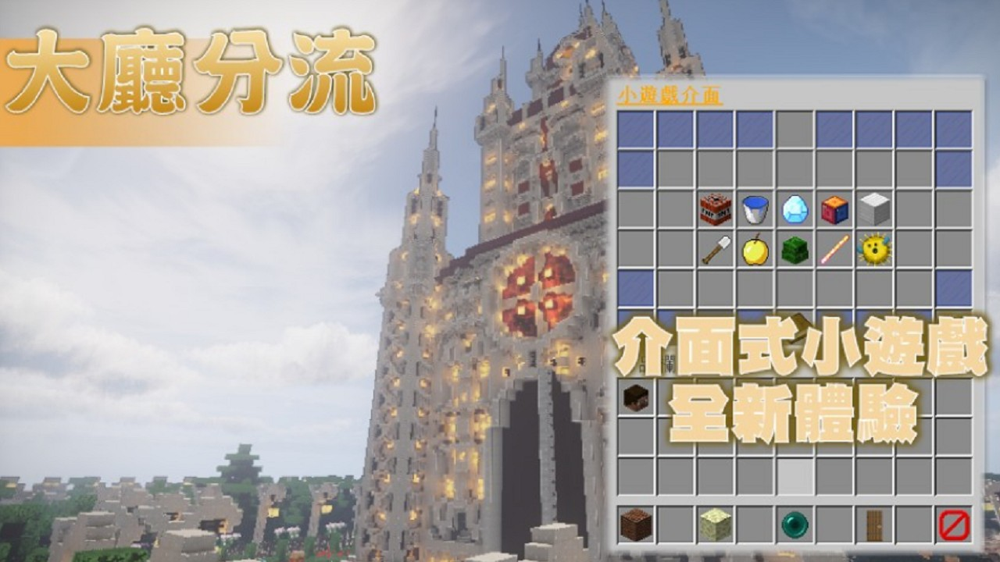
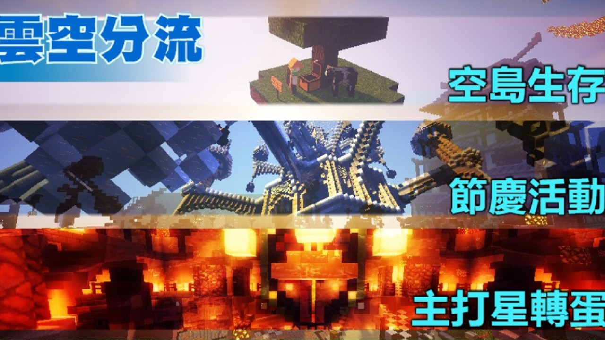
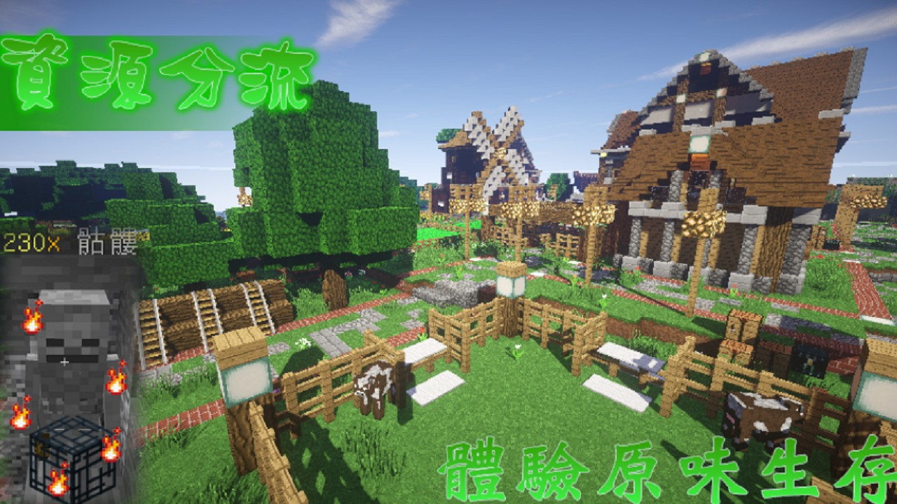
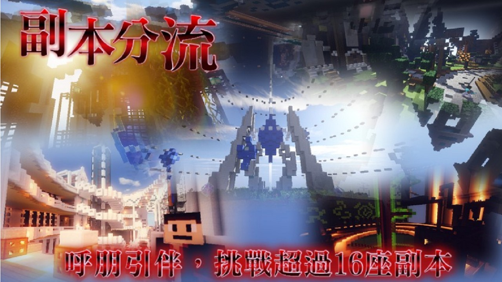
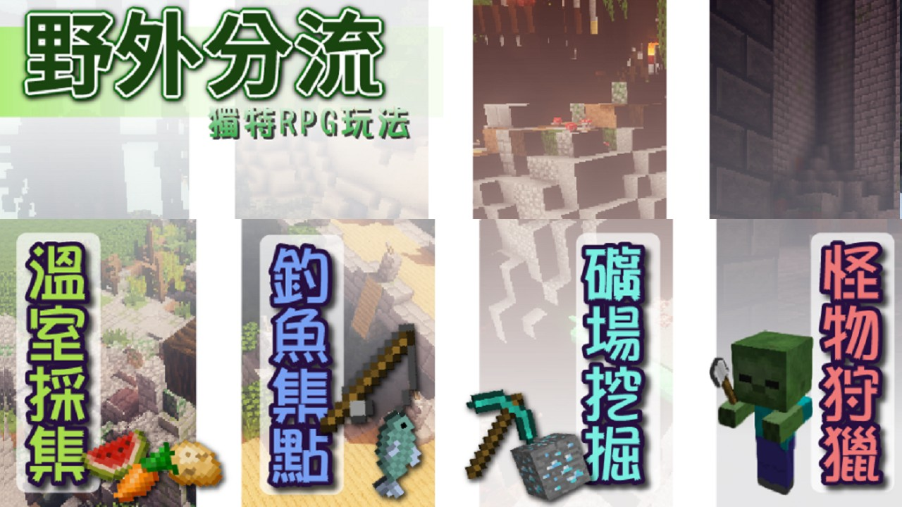

曾參與一款經典橫向卷軸 MMORPG之非商業伺服器架構與內容設計，涵蓋前端腳本、資料庫設計與遊戲活動開發，並專注於玩家體驗與營運穩定性的優化。主要工作與貢獻如下：
伺服器整體架構與資料流程圖
🎮 遊戲內容設計
- 由於營運時間長達四年，累積起來的系統多樣變化
- 伺服器畫分成數個分流：大廳分流、主世界、資源界、副本界、野外分流、小遊戲分流
- 大廳分流：用於阻擋非法流量之分流，進入伺服器服務會進入該分流，並接著轉往其他分流以保護其他分流之流量安全
- 主世界：玩家建立空島家園、參與限時活動、兌換道具之分流
- 資源界：玩家獲得素材之分流，定時重置洗白
- 副本界：玩家透過強化自身裝備與武器，收集怪物素材挑戰BOSS之區域，四年間累積了超20座副本以及關聯獨特主線劇情
- 野外分流：玩家在此分流可以接觸獨特生存模式(礦場收集特殊礦物、製作特殊草藥與槍枝)，持有獵槍前往「雲空大陸」大型開放世界副本狩獵，有別於副本界之戰鬥
- 小遊戲分流：玩家可以在此參加各種自動化小遊戲

大廳分流

雲空界

資源界

副本界

野外分流
🛠 故事與道具說明設計
- 我將道具附上非常長的說明，亦就是把故事寫進了道具之中。
- 並透過「本期主打星」免費轉蛋項目，透過活動、副本製造出定期更新的故事劇情釋出。
- 當年(2014年)掀起了一股浪潮引起多家伺服器爭相模仿。
劇情IN武器介紹
📌 補充說明
此專案屬於非營利性質，僅用於個人學習與社群交流用途，所有個人參與之設計與開發行為不涉及商業或收費行為。